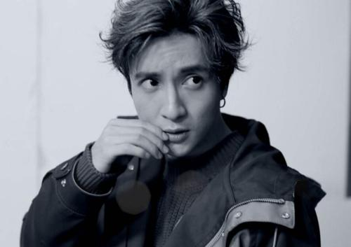

1983年7月17日出生于上海市，中国内地男歌手。 2006年6月9日，薛之谦发行首张个人原创同名专辑《薛之谦》；2007年在中国原创音乐流行榜上凭借《认真的雪》获得内地金曲奖；2008年11月26日发行第三张个人原创专辑《深深爱过你》；12月20日举行首场演唱会“谦年传说”；2012年7月17日发行专辑《几个薛之谦》。2013年11月发行专辑《意外》。 2015年6月10日正式签约海蝶音乐公司，升为制作人并发行原创EP《绅士》；同年，他还主演都市励志剧《妈妈像花儿一样》。2016年，凭借EP《绅士》、《一半》获得第16届全球华语歌曲排行榜最受欢迎男歌手、五大最受欢迎男歌手奖、上海地区杰出歌手奖及最受欢迎创作歌手奖，而歌曲《初学者》则获得年度二十大金曲奖。2017年4月，开启“我好像在哪见过你”全国巡回演唱会。
他知道自己的精神状态。
也知道自己正在以痛为歌。
就像荆棘鸟一样，在黎明到来之前，将自己的身体，插入尖刺，在剧痛之下，彻夜长歌。
所有听见的人都掉下眼泪。
所有路过的人不发一言。
这些旋律里，哀愁深不见底。但它不说，它只在离开之前，用音符说尽故事。
专辑
2006年6月9日《薛之谦》
2013年11月11日《意外》
2015年6月5日《绅士》
单曲
《等我回家》
《绅士》
《意外》
《方圆几里》
《其实》
《你还要我怎样》
《下午了》
《一半》
《高尚》